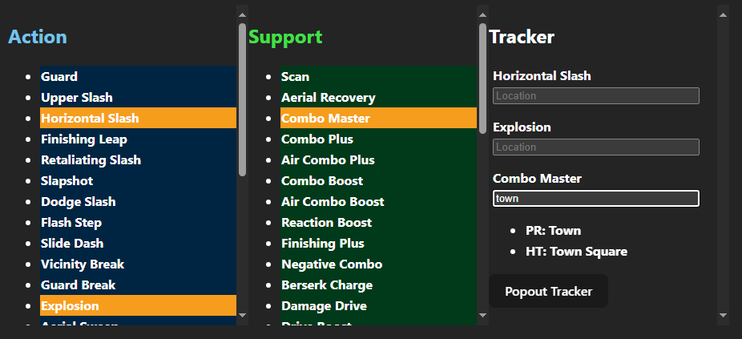

KH2 Ability Tracker
Tracker for KH2 abilities. Meant to work with new setting that hints abilities in Jiminy's Journal.
Features
- Choose any ability to be added to tracker section
- Location input suggesstions
- Input suggestions navigable with arrow keys
- Popout window for tracker
Future Work
Make tracker portion a popout window